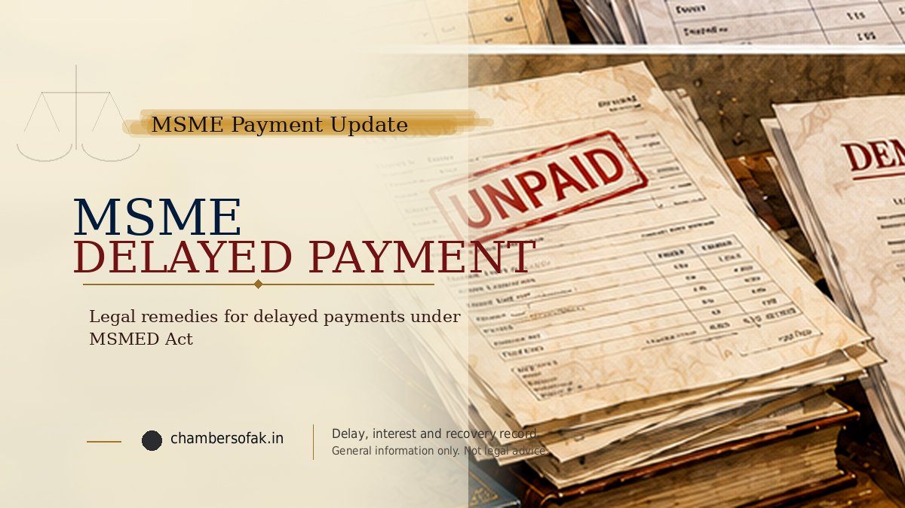

An unpaid invoice does not by itself establish that the supplier qualifies for the MSMED Act's special delayed-payment mechanism. Before sending a demand or filing a reference, verify the enterprise's status at the relevant transaction dates, reconstruct delivery or service acceptance, reconcile the balance and identify the proper dispute forum. This page is a first-action checklist; its linked guides address statutory calculations and filing in depth.

What to check first when a buyer has not paid
- Verify whether the claimant qualified as a micro or small supplier for the relevant transaction.
- Identify the purchase order, goods delivered or services rendered and their acceptance dates.
- Separate each invoice's principal from tax, deductions, credits and payments received.
- Work out the Section 15 due date using the actual written terms and statutory ceiling.
- Preserve the buyer's objections, acknowledgements, reminders and settlement communications.
- Assess limitation and the available MSEFC, civil/commercial or contractual route before commencing proceedings.
1. Does the special MSMED delayed-payment mechanism apply?
Chapter V of the Micro, Small and Medium Enterprises Development Act, 2006 protects a qualifying supplier. Under Section 2(n), this normally means an eligible micro or small enterprise that meets the statutory registration requirement, together with specified other categories. Merely describing a business as an 'MSME' is not enough: a medium enterprise does not automatically qualify for this Chapter V supplier remedy. Verify the Udyam record, business constitution, activities, classifications and the relevant contract and supply dates.
Registration timing requires legal analysis. In Silpi Industries v. Kerala State Road Transport Corporation (2021), the Supreme Court refused retrospective benefit where the relevant supplies preceded registration. Subsequently, in NBCC (India) Ltd. v. State of West Bengal (2025 INSC 54), the Court referred the broader registration-precondition question for consideration by a larger Bench. Do not treat a registration obtained today as automatically validating all earlier supplies, and do not assume one factual test resolves every historical contract or later delivery. Preserve registration history before selecting the claim route.
2. Has the payment date actually passed under Section 15?
Section 15 requires payment on or before the date agreed in writing. A written period cannot exceed 45 days from acceptance or deemed acceptance of goods or services. If there is no written payment-date agreement, payment is required before the appointed day defined in Section 2(b), linked to expiry of 15 days from acceptance or deemed acceptance. Thus, 45 days is a maximum ceiling for an agreed written term, not a universal free 45-day period on every invoice.
The date of acceptance needs proof. Under the statutory definitions, delivery or performance and any written objection made within the prescribed 15-day window can affect the acceptance analysis. An invoice date may differ from delivery, actual acceptance or the date a timely written objection was resolved. Begin with the underlying documents instead of assuming that the printed invoice date starts every clock.
| Situation to verify | First legal question | Useful evidence |
|---|---|---|
| Written term of 30 days | When were goods/services accepted and does the term apply? | Contract or PO, delivery/acceptance record |
| Written term of 60 days | Does the 45-day statutory ceiling apply to the eligible transaction? | Agreement, invoices, acceptance dates |
| No written payment period | When does the statutory appointed-day rule operate? | Delivery or service report, correspondence |
| Buyer raises quality objections | Were objections communicated in writing within the relevant window? | Dated objection, defect record, resolution |
For the full statutory date calculation and deemed-acceptance examples, read Section 15: the 15-day and 45-day payment rules.
3. Calculate the actual unpaid principal before mentioning interest
Prepare one row per invoice containing invoice number, supply or service description, amount, GST treatment, contractual due date, delivery proof, payments credited and outstanding principal. Match the supplier ledger to bank entries, credit notes, debit notes and written reconciliation with the buyer. Do not add a gross invoice value to a ledger balance if the same charge is already counted, and do not ignore part-payments or sums already adjusted.
Under Sections 16 and 17, eligible unpaid amounts may attract the specified statutory compound interest with monthly rests at three times the Reserve Bank of India's bank rate, calculated using the applicable dates and periods. This is not necessarily three times a fixed interest percentage throughout the dispute; historical rates and payment allocation may need verification. Keep principal, statutory interest and any other claim item separate. The MSME interest calculation guide explains the detailed worksheet method.
4. Preserve a compact, complete evidence file
For a first review, the core file should establish who supplied what, when it was accepted, when payment was due, what remains unpaid and how the buyer responded. It is generally more useful than an unsorted collection of screenshots.
- Enterprise status: Udyam/UAM documentation and relevant changes to registration or classification.
- Contract: purchase or work orders, signed agreements, accepted quotations and variations; document an oral order accurately if relevant.
- Performance: invoices, e-way bills, delivery challans, GRNs, installation or milestone certificates, service acceptance and quality objections.
- Money trail: statements of account, bank credits, TDS information where relevant, credit notes, part-payments and agreed adjustments.
- Communications: emails, letters, buyer acknowledgements, payment promises, notice replies and negotiations, with complete dates and context.
- Previous proceedings: existing Council, civil, arbitration, insolvency or settlement documents relevant to maintainability and double recovery.
Keep a working chronology with columns for date, event, document, disputed issue and relevance. Label missing proof rather than creating reconstructed documents. For a full claim-ready annexure sequence, use the detailed MSME claim preparation guide.
5. Should the supplier send a payment reminder or legal demand?
A clear written reminder can help establish the amount sought, invoice references, payment details and the buyer's position. Where appropriate, a formal legal demand may follow. It should avoid unsupported statements about statutory interest, registration dates or admissions. Preserve proof of sending and receiving communications.
A reminder or legal notice is not a substitute for assessing limitation, nor should a supplier assume that issuing one automatically extends the limitation period. Written acknowledgements, part-payments and the actual dates of claims require separate scrutiny under the applicable limitation rules.
6. Is the MSEFC the correct route?
Section 18 provides for references concerning amounts due under Section 17 to a Micro and Small Enterprises Facilitation Council (MSEFC). The Council first addresses the dispute through the statutory conciliation process and, if that fails, the arbitration mechanism under the applicable law. Whether this special procedure is available depends on supplier status, transaction dates, the nature of the contract, limitation, forum stage and other facts.
The Government's MSME Samadhaan initiative provides the official filing/routing framework for qualifying micro and small enterprises with valid Udyam Registration. Portal submission is not itself a Council award or a determination of supplier status or limitation. Ministry guidance calls for work-order details and describes using an affidavit when the purchase order was oral. State-specific Council directions and any subsequent physical or online filing requirements must also be checked.
Read MSME Samadhaan filing: before and after submission for portal records, and the MSEFC versus civil suit versus arbitration guide to compare available forums before making an irreversible procedural assumption.
7. What if the buyer disputes delivery, quality or payment?
A buyer's defence may turn on whether the claimant was an eligible supplier, whether the goods or services were actually delivered and accepted, whether defects were raised on time, and whether the account contains uncredited payments or contractually relevant adjustments. An alleged quality dispute does not automatically establish that every amount was lawfully withheld. Equally, the supplier's invoice alone does not automatically prove acceptance of all work or the quantum claimed.
If the supplier has received a buyer's legal reply or a buyer has received an MSEFC notice, preserve the notices and prepare a document-wise response. The specialised MSEFC notice and buyer-defence guide covers that stage in more detail.
8. Check the applicable version of the law and limitation
The MSMED (Amendment) Act, 2026 received presidential assent in August 2026. Its commencement clause provides for implementation on dates notified by the Central Government, potentially different dates for different provisions. Before applying any amended Section 18 procedural timelines or other new obligations, verify the relevant commencement notification and transitional position. Do not assume the entire amendment became operative merely on the date of assent.
There can also be different limitation questions at the demand, reference, conciliation and arbitration stages. A long-overdue invoice requires review of the individual dates and any valid acknowledgement or payment, not simply an online filing. See the detailed MSME limitation guide.
Quick decisions before taking action
| Finding | Immediate next review |
|---|---|
| Valid micro/small supplier status and accepted unpaid invoices | Verify due dates, principal, interest and appropriate MSEFC route |
| Registration obtained after historical supplies | Review registration timing, relevant decisions and alternative recovery forum |
| Buyer disputes quantity, quality or delivery | Reconcile objections against dispatch, performance and acceptance records |
| Several old invoices with partial payments | Reconstruct invoice-wise limitation, adjustments and acknowledgements |
| Proceedings already started in another forum | Examine jurisdiction, duplication, procedural stage and available relief |
Conclusion
For unpaid MSME invoices, the first task is to establish a qualifying supplier, a proven transaction, the applicable statutory due date and a reconciled balance. Only then should the business choose a demand, MSEFC reference or another available recovery process. This introductory guide is intended to help identify the questions and documents; specific legal positions depend on the governing law, limitation and complete records.
Last updated on: 10/10/2026 at 11:59
Useful Internal Pages
References / Sources
- Micro, Small and Medium Enterprises Development Act, 2006 - Sections 2(b), 2(n), 15, 16, 17 and 18.
- Ministry of MSME - Official Udyam Registration portal - enterprise registration and classification.
- Ministry of MSME RAMP - MSME Samadhaan - eligibility and Council reference mechanism.
- Ministry MSME Champions FAQ - work-order and supporting-record guidance, including legacy portal terminology.
- Silpi Industries v. Kerala State Road Transport Corporation, Supreme Court, 29 June 2021 - registration-timing and retrospective-claim issues.
- NBCC (India) Ltd. v. State of West Bengal, 2025 INSC 54 - larger-Bench reference concerning registration prerequisites.
- Ministry of MSME - Orders and Notices - MSMED (Amendment) Act, 2026; check separate commencement notifications.